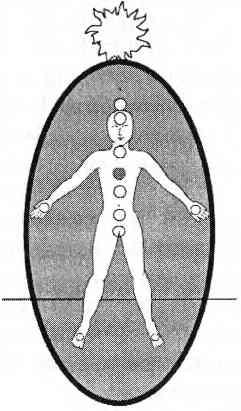

DÖRDÜNCÜ ÇAKRA KALP ÇAKRASI
Dördüncü çakra zümrüt yeşili renkte, göğsün ortasında bulunan, kavrayıcı, kabul edici enerji merkezidir. Kalp çakrası olarak da adlandırılır ama aslında göğüs kemiğinin arkasında konuşlanmıştır. Timüs beziyle ilişkilendirilmiştir.

Yüceltilmiş, pohpohlanmış, ilahlaştırılmış, gücünün üstünde çalıştırılmış ve yanlış anlaşılmış bu enerji merkezi hakkında o kadar çok yazılıp çizilmiştir ki, bütün bu ağır yakıştırmalar altında un ufak olmamak zaten çok zordur; ya da ayinler ve batıl inançlar tapınağına hapsedilmiş, kadim ruhlar ve yüksek benler arasında vücuda getirilmiştir. Hadi oradan! Ne dersiniz, sil baştan başlayalım mı?
Dördüncü çakra, zümrüt yeşili renkte, alıcı, kavrayıcı, kabul edici enerji merkezidir; hem kendisine hem de dış dünyaya karşı şefkat duygusunu ve sevme yeteneğini barındırır. Kalp çakrası el çakralarına bağlıdır. Bu bağlantı sağlıklı değilse, verme, sevme, bağlanma ve kabul etme becerileri zarar görebilir.
Kalp çakrası, yedi çakralı sistemin merkez (ya da geçiş) çakrasıdır.
Aşağıda bulunan üç beden çakrası ve yukarıda bulunan üç ruh çakrası arasındaki boşlukları kalp çakrası doldurur. Sağlıklı bir sistemde kalp çakrası tamamıyla spiritüel olan bilgileri (beşinci çakra tarafından toplanan ve yollanan) alarak onları alt çakralara tercüme eder. Aynı zamanda tamamen fiziksel olan bilgileri de (üçüncü çakra tarafından toplanan ve yollanan) alt çakralara tercüme eder.
Sağlıklı bir kalp çakrasının bilgi iletici yetenekleri her türlü beden/ruh bölünmesi tedavisi sırasında gereklidir. Dördüncü çakra çalışır durumdayken bilgi toplama ve yerine ulaştırma merkezi görevi yapar. Sürekli olarak ruh ve beden arasındaki bağlantıyı sağlar. Sağlıklı işleyen dördüncü çakra desteği olmadan ruh ve beden ortak konularda birbirlerinin hiç farkında olmadan sağa sola yalpalarlar.
Yukarıda yazılı bilgileri okuduktan sonra spiritüel çalışma yapan bir kişinin kalp çakralarının daha sağlıklı olduğunu düşünebilirsiniz, ama bir daha düşünün! Maalesef meditasyon ve spiritüel gelişim kurslarına katılan çoğu öğrencinin kalp çakraları en fazla zarar görmüş, en yorgun, en işlevini yitirmiş çakralardır. Spiritüel çalışmanın pek çok biçiminde kalbin başkalarını sevme yeteneğine o kadar çok önem verilir ki, sonunda diğer bütün yardımcı özellikleri yok edilir ya da bastırılır.
Başkalarını sevmek ve affetmek en önemli spiritüel davranış olarak öğretilir. Kendini başkalarına tümüyle vermek sanki kalbin en önemli özelliğidir. Elbette bunlar dördüncü çakra enerjisinin önemli özelliklerindendir. Bunlar aynı zamanda kendine önem vermeyen, bağlantısını yitirmiş, diğer altı çakranın özellikleri ile alakası kalmamış kaçak şifacıların da özellikleridir.
Evet, başkalarını sevmek hayatidir. Ama başkalarını sevmek spiritüel bir yolculuğun en başında kendini yok saymak için bir özür değildir. Başkalarını gerçekten sevebilmenin yolu her ne olursak olalım önce kendimizi sevmeyi öğrenmekten geçer. Kişinin kendini sevmesi, eğer bütün kalp enerjisi dışarıya yöneltilmişse, mümkün değildir. Kişinin ne kendisine verecek sevgisi kalmıştır ne de hayati bir mesele olan ruh beden iletişimi için enerjisi vardır.
Tüm dünyayı ve herkesi sevmek eğer içeri dönük sevgi yoksa hiçbir yere varmaz. Bu kadar basit. Başkalarını gerçekten sevmeye başlamak için kalp çakrasının enerjisi bedene geri döndürülmeli ve tanınmalıdır.
Kalp çakrası üzerine bu kadar düşülmesi bazen geri teper. Çakra sisteminin bir bütün olarak dengesini ve hizasını bozar, çünkü sürekli dışarı akan kalp çakrasının enerjisi ruh ve beden arasında kurulan ilişkinin sürdürülmesine yetmez olur. Kalp çakrasına yüklenmek aynı zamanda fiziksel ve ruhsal bağışıklığa da müdahale eder, çünkü üçüncü çakra tüm zamanını yorgun bir kalbi korumaya harcar ve böylece ruh ya da bedeni korumak için zamanı kalmaz.
Dışa enerji akıtan dördüncü çakra yardım ya da şifa isteyemez çünkü İletişimci beşinci çakra, dördüncü çakra kadar yorgun perişan bir durumdadır. Beşinci çakra bireyin kendi ihtiyaçlarını anlatacak durumda değildir. Kalp çakrası şifacıları kendilerini sürekli olarak tehlikeli ortamlarda şifa verirken bulurlar ve yardım isteyemezler. Genellikle kendilerine yardım edemedikleri gibi başkalarına da yardım edemez ve yitip giderler.
Dördüncü çakranın kötü kullanımı aynı zamanda çakranın kendisine de zarar verir. Yanlış kullanılan dördüncü çakra korunmasız şifacılarda, doktorlarda ve terapistlerde sağlıklı dairesel şeklinden çıkarak çok genişlemiş bir halde yataylaşarak nerdeyse omuzlara ulaşır.
Aşırı çalıştırılan bir kalp çakrasının sahibi, tüm varlıkları sevip anlayış gösterme ve ağızlarına çikolata tıkma arasında salınırken bir yandan da para yüzünden öfke nöbetine tutulabilir. Onlara göre insan ya sadece kendi ihtiyaçlarını karşılar ve etrafındakilerden hep bir şeyler alır ya da kendisini tamamen unutup her şeyini başkalarına verir. Dünya ya aktır ya da kara; bunların arasında iletişim kuracak griye yer yoktur. Sadece kalp çakraları ile yaşayan insanlar bu gezegendeki yaşamı “ya, ya da” bakış açısıyla görürler. Ya beden dünyasında, ego, cinsellik ve para için yaşanır ya da ruh dünyasında benliğin bütün ihtiyaçlarından vazgeçerek yaşanır. Bu bölünmüş kişiler bir uç noktadan diğerine savrulup dururlar.
Ben bu tür insanları tarif ederken sarkaç benzetmesini kullanırım. Gidebileceği iki uç noktadan birine varan sarkacın orada kalabilmek için inanılmaz bir enerji harcaması gerekir. O konumda kalabilmeyi sağlamanın tek yolu bir şeyin sarkacı yakalayıp orada tutmasıdır. Bu kesinlikle doğal değildir. Sarkaçlar sadece birileri enerji yüklerse deli gibi sallanırlar. Doğal hallerindeyken, ispit merkezi civarında yavaşça salınırlar. Gerçek sarkaçlar sadece ak ve kara arasındaki gri alanda yaşarlar.
Doğal olmayan ve uç noktaya ulaşan sallanmanın panzehiri elbette ki dengedir. Bu dengeyi sağlamak en kötü şekilde zedelenmiş kalp çakrası vakalarında bile mümkündür. Çakra sistemini dengeleyerek, gerçek sevgiyi ve tedaviyi elde edersiniz; tıpkı doğru anlamayı, düşünmeyi, korumayı, yaşamayı, iletişim kurmayı, bilmeyi, almayı ve vermeyi öğrenebileceğiniz gibi. Sarkaç örneğini bu dünyanın ya ak ya da kara; ya bir uçta ya da diğer uçta olmadığını hatırlamak için kullanın. Biz, bedenin içindeki ruh ve ruhun bedeniyiz. Her iki uçtan sadece biri daha iyi ya da kötü; daha yüce ya da aşağı; daha fazla ya da az değildir.
Ruhunuzun ya da bedeninizin gereksinimleri için ikiye ayrıldığınızı hissediyorsanız, bu durum kalp çakranızın özgürce düşünemediğinin; diğer çakralar arasında tercümanlık yapamadığının açık bir işaretidir.
Bir uçtan diğerine inanılmaz hızla sallanan sarkaçlarla yaptığınız sözleşmeleri yakın ve özgür kalan bu enerjiyi kalbinizi iyileştirmek için kullanın.
KAPALI YA DA AÇIK DÖRDÜNCÜ ÇAKRA
Her kalp çakrası sorununda el çakraları da işin içindedir. Kalp çakrası sorunlarınızı iyileştirdikçe ellerinizle kalbiniz arasındaki bağı gözlemleyin. Bu bağı iyileştirmek yapacağınız tüm kalp çalışmalarını destekleyecektir. Eğer kalbinizin ilgiye ihtiyacı varsa el çakraları üzerine yazılmış olan bölümü okuyun.
Çok açık ya da yanlış kullanılmış bir kalp çakrasının yol açabileceği tehlikelerden daha önce söz etmiştik. Kalp çakranız çok açıksa (çapı 13 santimetreden daha büyükse) ve diğer çakralarınız çılgına dönmüş durumdaysa elinizden geldiğince çabuk hepsini iyileştirip hizaya sokun. Bütün çakralarınızın en fazla 13 cm açıklıkta olmasına dikkat edin.
Tıpkı diğer bütün çakralar gibi sağlıklı bir çakra sisteminde bir anlık açık bir kalp çakrası olağandır. Kalp çakraları sevgi, öz sevgi ve ruh beden iletişimi konularında harekete geçecekleri zaman kendiliğinden açılırlar. Çakralarınız dengeliyse (özellikle üçüncü ve beşinci çakranız) sırtınız ve ciğerlerinizin olduğu bölge rahat ise o zaman kalp çakranızı ardına kadar açık bırakın. Önüne ve arkasına birkaç nöbetçi yerleştirin. Kalp çakranızı günde iki kez kontrol edin. Bir haftadan daha uzun süre açık kalırsa o zaman elinizle normal boyutuna döndürün.
Yamru yumru bir kalp çakrası başlı başına bir meseledir. Öteki çakralarınız ne kadar mükemmel çalışırsa çalışsın dairesel biçimini korumayan kalp çakrası iyi bir şey değildir. Bu biçim bozukluğu, nefes nefese kalındığına; maksadını aşmış aşırı bir kalp çakrası tedavisine ya da öz sevginin yerine başkalarının sevgi ve onayının konulması eğilimine işaret ediyor olabilir. Biçim bozukluğunun farkına vardığınız anda kalp çakranızı özgün dairesel biçimine döndürün. Ellerinizi kullanarak, yeniden dairesel biçimini alması için çakranın bütün enerjisini ona geri yollayın ve el çakraları bölümüne atlayarak bu konuda yardım alın.
Minicik ya da sımsıkı kapalı bir kalp çakrası kalp yorgunluğu, ihanet ya da güvensizliğin işaretidir. Korunmak için bu şekle girdiği düşünülse bile kalp çakrasını kapamak kişinin hem kendisini hem de çevresini cezalandırmasıdır. Kalp kırıklığı sonunda kapanan bir kalp çakrası sevilmeye layık olmadığını düşünen bir kalbe işaret eder. Bu kalbin insan ilişkilerinin yarattığı fırtınaları atlatacak sağlam bir sevgi ya da güven geçmişi yoktur. Masallara inanmamaktadır, mutluluk dileyemez ve aşk isteyemez. Ruh ve beden çakraları arasında tercüman olmayı reddeden bir kalp çakrası büyüyemez. Kapalı bir kalp çakrası trajediyi azaltmak yerine büyütür.
Kapalı bir kalp çakrasını açmak zorunlu olduğu kadar zor bir iştir. Hem cesaret gerekir hem de uzun zamandır inanılan sevgiye layık olmama düşüncesini bir kenara bırakmak lazımdır. Sevgi her yerdedir ama insan sevgiyi görüp hissetmeden önce ona inanmalıdır. Oysa kapalı bir kalp çakrası pek bir şeye inanmaz.
Kalp ve gözler sevgiye kapanmışsa ne çevredeki insanların birbirlerine düşkünlükleri ne de kırk tane harika aşk ilişkisi, hiçbir şey ifade etmez. Eğer her ikisi de açıksa sevgi en olmayacak yerde ortaya çıkar; hiç tanımadığınız bir çocuğun dokunuşunda, komşunun köpeğinin gözlerinde, işyerindeki patronun övgüsünde, aile bireylerinden birinin dur durak bilmez konuşmasında. Sevgi özel bir farkındalık gerektiren bir dildir yoksa insanın kulağına manasız bir kuru gürültü gibi gelir.
Kalbimi kapamak için dayanılmaz bir arzu duyduğumda kendi kendime “Sevgi kalıcıdır, değişen sadece isimlerdir” diye tekrarlarım. Oturup şöyle bir düşünecek olsam, etrafta sevginin bir şeklini mutlaka görürüm, ama benim tek derdim romantik bir ilişki ya da bitmek tükenmek bilmez bir heyecan isteği olmuştur. Böylece kendimi sevginin olmadığına inandırırım; aslında gerçekte etrafımda olan sevgi benim ilgimi çekmemektedir. Bu kalbimi ille kapatacağım diye inat ettiğim anlarda sevgiyi onun lisanında dinleyeceğim yerde kendi lisanımla dinlememin sonucudur. Bunu fark ederim.
Sevgi kendisini her zaman var eder. Dördüncü çakrası açık insanlar için daima bedelsiz ve kullanılmaya hazırdır. Tek istediği, onu saklayıp biriktirmeniz yerine kendiniz ve başkaları için kullanmanızdır. Sevgiyi almak ve sunmak için dördüncü çakranın sürekli açık olması gerekir. İçinizde sayısız sevgi, şifa ve ruh beden iletişimi soruları dolanıp duruyor olabilir ama eğer ilerlemek istiyorsanız kalp çakranızı daima açık ve sağlıklı tutmalısınız. Açık kalbiniz size sevmeyi, şifa vermeyi, güvenmeyi ya da herhangi bir şeyi paylaşmayı dayatmaz. Ancak eğer tam bir hayat yaşamak istiyorsanız kalp çakranızı açık tutmalısınız. İstediğiniz kadar sevmeyin ve sevilmeyin ama kalp çakranızı açık ve sağlıklı tutun, tamam mı?
Çakra sisteminiz sağlıklıysa ama kalbiniz şu anda kapalıysa, onarım işi için ya da ufak tefek bir iki düzeltme için kapanmış olabilir. Kalp çakraları zedelenmeye çok müsaittir ve zaman zaman kaçıp kendi başlarına tatile çıkmaları gerekir. Eğer bedeninizde kalabiliyorsanız; sırtınız esnek ve rahatsa, dördüncü çakranın kapalı olması bir sorun teşkil etmez. Çakra sisteminizi kendi kendisini tedavi etmek konusundaki duyarlılığı için kutlayın ve çakralarınızın her birine bir hediye verin. Tatile çıkmış dördüncü çakranızın önünü ve arkasını sırf bu işe adanmış en az dört nöbetçi gül ile korumaya alın. Bu nöbetçiler, yeniden açılmaya hazır olana kadar, ki bu da bir haftadan uzun sürmez, kalp çakranızın mahremiyetini koruyacaktır.
Eğer kalp çakranız bir haftanın sonunda hala kapalıysa, kendisini açmadan önce auranızın sınırlarını düzeltmenize, nöbetçilerinizi gözden geçirmenize gereksinim duyuyor olabilir. Kalbinize ne istediğini sorun, size söyleyecektir.
SAĞLIKLI DÖRDÜNCÜ ÇAKRANIN ÖZELLİKLERİ
Dengeli bir çakra sisteminin içindeki sağlıklı bir dördüncü çakra görülmeye değer güzelliktedir. Kalp, sevgi ve onayı bedenin içine oradan da dış dünyaya akıtır; zümrüt yeşili enerji, çakranın içinde asaletle devinir. Sağlıklı bir dördüncü çakra hem bedenden hem de koruyucu üçüncü çakradan enerji ve bilgi alır; bunları sevgi ve empati ile güçlendirdikten sonra üst çakralara yollar. Kalp aynı zamanda İletişimci beşinci çakradan gelen enerjiyle bilgiyi dinler ve kabul eder; şefkat ve duygu eklediği bu enerjiyi beden çakralarına yollar.
Dördüncü çakranın sağlıklı olduğunun en önemli işaretlerinden biri de kişinin kendisine yöneltebildiği sevgi dolu mizah duygusudur. Sağlıklı çakra üç beden çakrasından gelen ağır fiziksel, duygusal, entelektüel ve koruyucu bilgiye açıktır. Ancak sağlıklı bir kalp bu ağırlığı mizah anlayışı ile hafifletmeyi başarır.
Üç bedensel çakra, hayatlarının çoğunu tehlike ve hayatta kalma atmosferi içinde yaşarlar; bu yüzden de pek rahatlama şansları olmaz. Sağlıklı bir kalp çakrası olaylara alt üç çakraya göre daha yukarıdan, kuşbakışı bir konumda bakarak daha geniş bir bakış açısı sunar.
Kalp çakrasının gülüşü alaycı değildir, tam tersine travma sırasında bedene mesafe ve perspektif sağlayan bilinçli ve sıcak bir gülüştür. Kalp gülüşü şimdiki anın acısına bir iyileşme şansı vererek bedendeki stresi azaltır. Gerçeklik temelli dördüncü çakra desteği olmadan üç ruh çakrası kedere dalıp gider ve bedeni artlarında bırakırlar.
Bir kez iyileşip bütün benliğe uyum sağladıktan sonra sağlıklı bir kalp çakrası başkalarını iyileştirmeyi; her şeyi vermeden, vermeyi öğrenir.